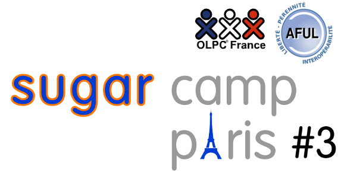
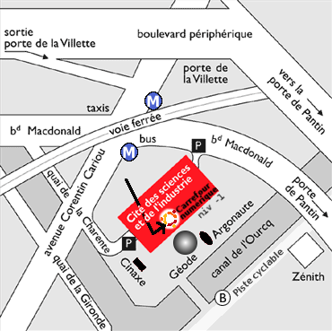
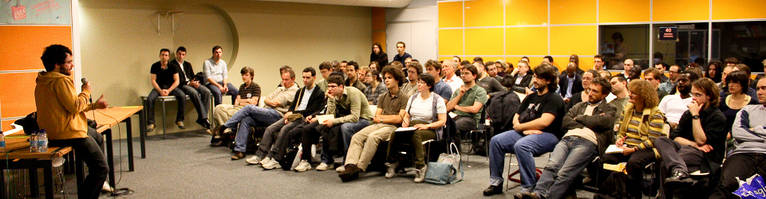

SugarCamp #3
Le SugarCamp est une occasion unique en Europe d’échanger avec les acteurs du projet OLPC et de la plate-forme pédagogique libre Sugar, mais aussi plus largement d’échanger avec ceux qui font de l’accès universel à une éducation libre une priorité.
Quand ?
Samedi 12 avril 2014 Recherche Déploiements OLPC
Le samedi abordera plus spécifiquement les problématiques de recherche, le retour d'expérience sur des déploiements et l'ouverture vers d'autres projets de contenus comme Vikidia (l'encyclopédie libre pour les 8-13 ans) et un atelier de découverte de la programmation avec Scratch (format coding goûters). La journée se terminera avec une table ronde sur l'enseignement de l'informatique.
Venez avec vos enfants, il vont adorer !
Dimanche 13 avril 2014 Tech Sugar
Pré/Post événement
Nous avons prévu un lieu pour les hackers de Sugar et d'OLPC qui voudraient hacker/echanger le Vendredi et le Lundi avant et après l'événement. Merci de vous enregistrer à l'événement et de nous préciser si vous voulez participer à ces Pré/Post événements.
Où ? Au Carrefour Numérique de la Cité des Sciences
Cité des Sciences et de l'Industrie 30 Avenue Corentin Cariou 75019 Paris France

Figure 1 : © ubuntu-fr.org CC BY-SA v3.0
Programme détaillé
| Heure | SAMEDI | DIMANCHE | |
|---|---|---|---|
| 10h |
10h à 10h30
|
10h à 10h30
|
|
| 10h30 |
10h30 à 11h - en anglais
Walter Bender
|
10h30 à 11h - en anglais
Manuel Quiñones
|
|
| 11h |
11h à 12h - en anglais
Manuela Piazza, Toussaint Guglielmi (à confirmer)
|
11h à 12h - en anglais
Bruno Coudoin
|
|
| 12h |
12h à 13h - en anglais
Sandra Nogry, Clara Wagner
|
12h à 13h - en anglais
Lionel Laské
|
|
| 13h |
13h à 14h
|
13h à 14h
|
|
| 14h |
15h à 16h - en anglais
Damien Larrouqué
|
14h à 17h - en français
|
14h à 15h - en anglais
Xavier Carcelle, Jonathan Ragot
|
| 15h |
14h à 15h - en anglais
Jonathan Ragot, Pierre Varly, Kevin Raymond
|
15h à 16h - en anglais
Mathias Damour
|
|
| 16h |
16h à 16h15
|
16h à 16h15
|
|
| 16h15 |
16h15 à 17h15 - en anglais
Christoph Derndorfer, Bastien Guerry
|
16h15 à 17h15 - en anglais
Pierre Varly
|
|
| 17h15 |
17h15 à 18h15 - en français
Bastien Guerry
|
17h15 à 18h15 - en anglais
Adam Holt
|
Basic Educational Resources Needed for Innovative Education (BERNIE) - Your School Resources in 1 TB
17h15 à 18h15 - en anglais
Tony Anderson
|
De l'espace et de la convivialité !
Le carrefour numérique accueille depuis longtemps des événements liés au libre : l'espace se prête à la fois aux échanges à plusieurs et aux ateliers en petits groupes. Ci-dessous des images des Ubuntu Party !

Figure 2 : © http://ubuntu-paris.org/

Figure 3 : © http://ubuntu-paris.org/